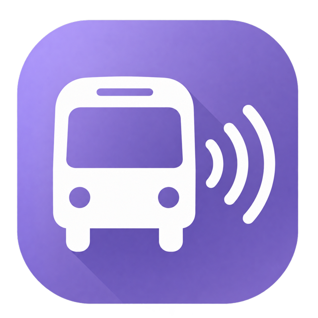
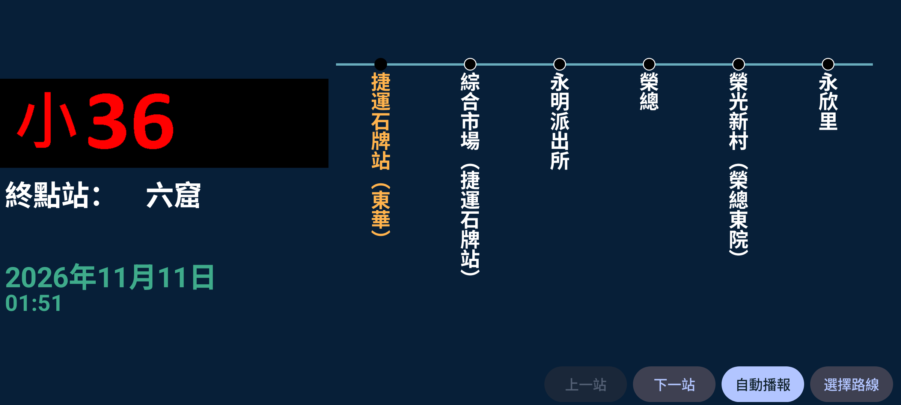

路線選好，
就能開始報站。
依一般數字、小型、捷運接駁與其他類別選線，選好方向後確認。手動切站，或設定自動播放間隔。
四語站名播報自動／停止動畫站名

公車報站&導乘ANDROID APP · V2.0
熟悉的車內到站畫面，從選擇路線開始。
站名、播報與路線圖，隨手掌握。
Android 8.0 以上 · APK 安裝檔
一支手機，
就是你的報站台。
熟悉的到站畫面
保留車內顯示風格，
讓下一站看得見，也聽得見。

四個分頁，各就各位
依一般數字、小型、捷運接駁與其他類別選線，選好方向後確認。手動切站，或設定自動播放間隔。
分類與搜尋找到路線圖，開啟後可放大、移動，查看沿途資訊。
一般與卡農下車鈴、停車指示器，以及可獨立選擇路線的對外廣播。
設定時鐘與秒數、播放主題、自動播報間隔及背景照片。Android 12 以上可使用系統動態強調色。
第一次使用
桌面小工具也能顯示站名，
操作上一站、下一站與自動播報。
下載 APK，在 Android 手機上開啟安裝檔。
在播放頁選擇分類、路線、方向，再按確認。
按下一站播放站名；也可設定間隔啟動自動播報。
準備好了嗎？
公車報站&導乘 V2.0 · Android 8.0 以上
站名錄音依現有音檔提供，缺少錄音的站點仍會繼續切站。寶錄音檔選項尚未啟用；部分路線或方向未提供對外廣播音檔。匯入的路線圖可能與現行站序不同。本頁提供 Android APP 下載，網站本身不執行報站功能。